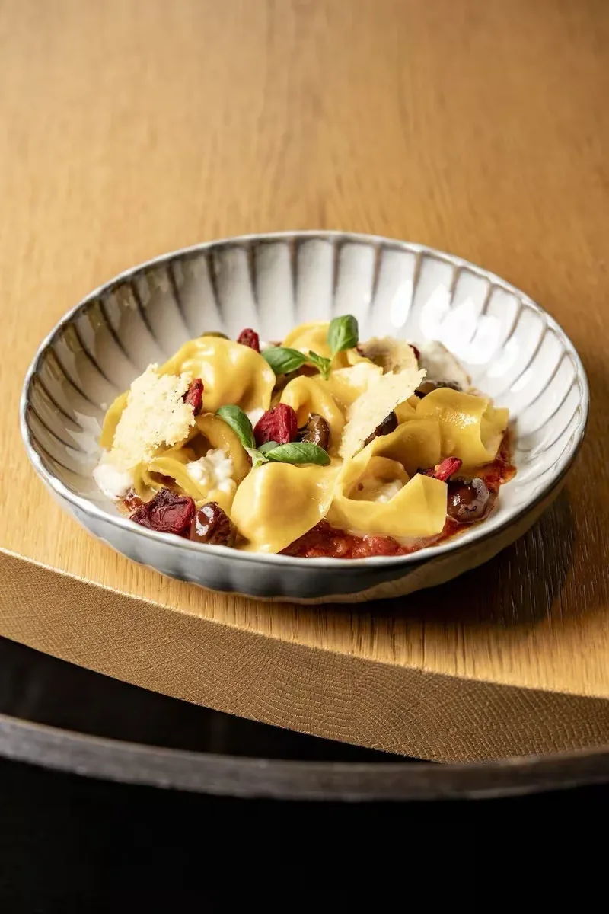
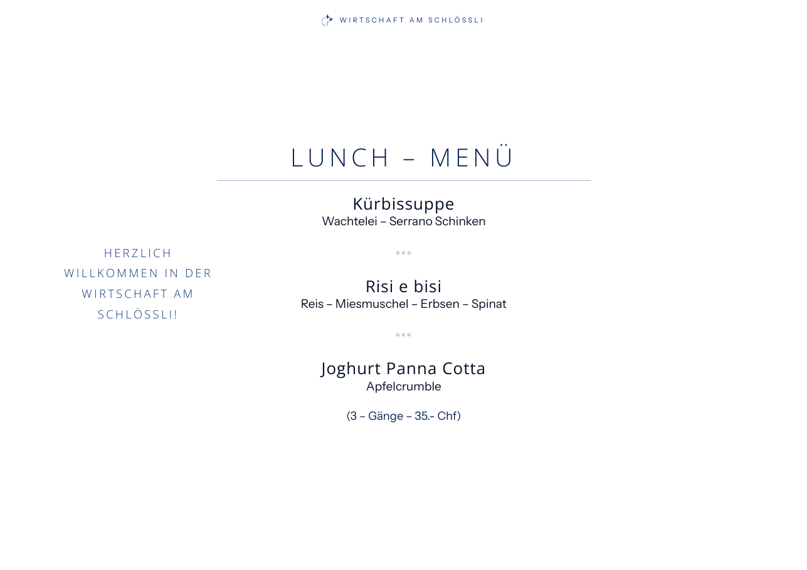
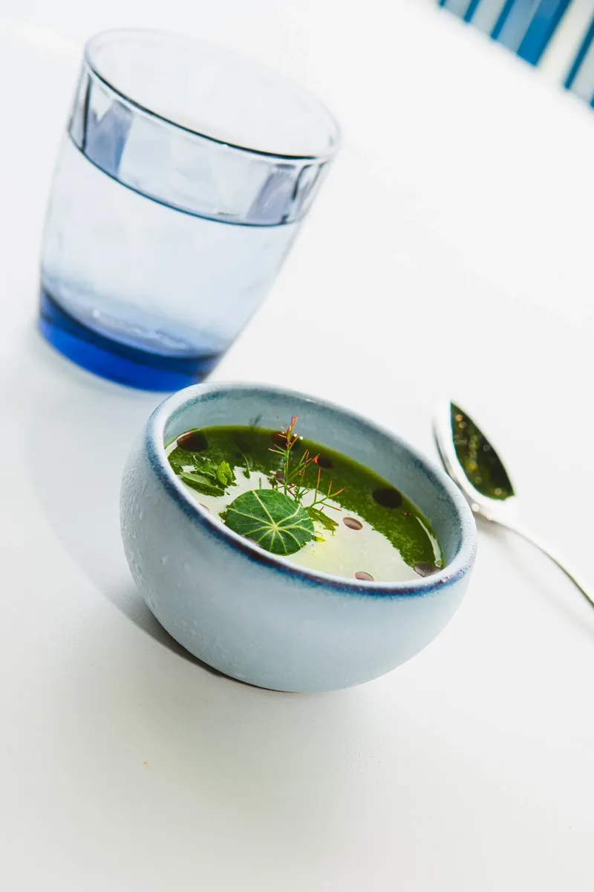
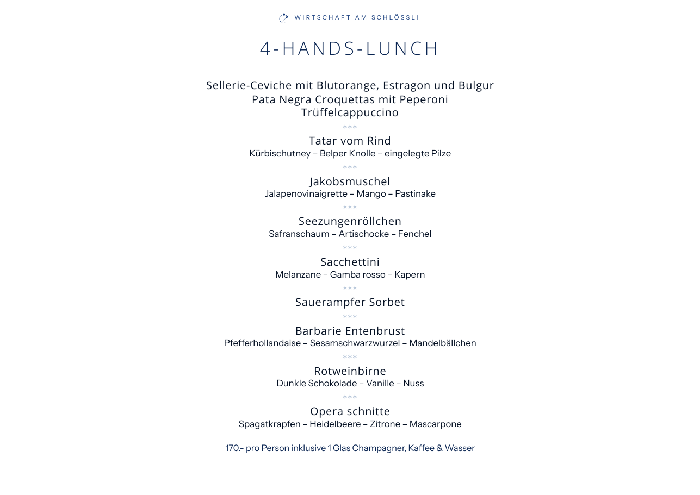
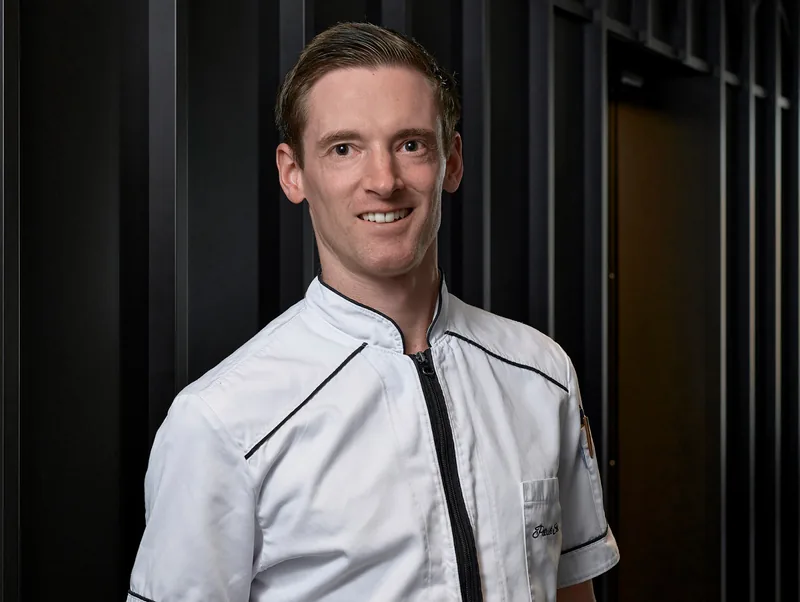

Station 10 · Kartenmacher · 19.10.2026
Sechs Karten aus den PDF der heutigen Website, Wort für Wort und Zahl für Zahl gegen das Original gelesen: 526 Einträge, 546 Preise, 0 Abweichungen. Aus diesen Daten lesen La Carte, die Website und die neuen PDF.
Restaurant · 3 Seiten A4
Neue PDF Wort für Wort gleich den Daten. Gelesen aus Speisekarte-Oktober.pdf.
Restaurant · 1 Seite A4 quer
Neue PDF Wort für Wort gleich den Daten. Gelesen aus Lunch_261019.pdf.


Bar · 2 Seiten A4
Neue PDF Wort für Wort gleich den Daten. Gelesen aus Lastermeile-Homepage-2339.pdf.
Restaurant · 25 Seiten A4
Neue PDF Wort für Wort gleich den Daten. Gelesen aus 20261014_Weinkarte.pdf.
Banketts & Gruppen · 3 Seiten A4
Neue PDF Wort für Wort gleich den Daten. Gelesen aus Bankettmenuvorschlage.pdf.
Events · 1 Seite A4 quer
Neue PDF Wort für Wort gleich den Daten. Gelesen aus 4_Hands-_Stier.pdf.


Für Station 14 · eine Quelle
Jede Karte liegt als eigene Datei unter _karten/stand/. Ein Satz zeichnet sie in eine Seite, Schrift und Farbe kommen aus der Seite selbst. Ändert sich eine Karte, wird nur die Datei getauscht; PDF und Website stimmen danach überein.
_karten/stand/speisekarte.json_karten/stand/lunch.json_karten/stand/laestermeile.json_karten/stand/weinkarte.json_karten/stand/bankett.json_karten/stand/vier-haende.json<div id="karte"></div>
<script src="../_karten/karte.js"></script>
<script>SchloessliKarte.lade('#karte', '../_karten/stand/speisekarte.json')</script>La Carte liest alle Karten als ein Dokument: _karten/haus.json (Haus «schloessli», geprüft mit dem Datenmodell von La Carte).